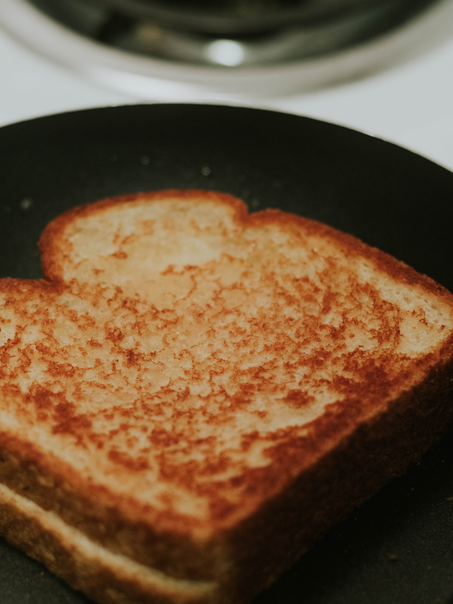

Grilled Cheese
Don't miss this all American favorite. No childhood is complete without a healthy dose of grilled cheese. You can even make this dish more nutrient rich by using whole grain bread and for the veggie folks you can try a vegan alternative cheese. I would reccoment violife chedder!
Ingredients
- American Cheese (one slice per sandwich)
- Bread (two slices per sandwich)
- Butter or vegan alternative (about 2 Tbsp)
Steps
- Butter two slices of bread on one side
- Head a sauce pan on medium high and add hald Teaspoon on butter
- once pan is heated add one slice of bead butter side down
- Add cheese to slice in pan
- Place other slice on top of cheese with the butter side out
- After aproximitely 3 minutes flip the sandwitch and grill other side another 3 minutes
- If needed keep flipping until both sides are grilled to your preference